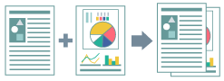
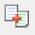

Объединение нескольких файлов
Несколько файлов можно объединить в один для распечатки. Также можно сделать следующее:
Объединить в один файл для распечатки данные, созданные разными приложениями.
Изменить настройки печати.
Удалить ненужные страницы.
Предварительно просмотреть и подтвердить данные для печати.

1.
Откройте вкладку [Основные настройки], [Макет страницы], [Окончательная обработка], [Источник бумаги] или [Качество].
2.
Выберите [Способ вывода] → [Правка и предварительный просмотр] → нажмите [ОК].
3.
Нажмите [ОК] на экране драйвера принтера.
4.
Нажмите кнопку печати в приложении.
5.
Повторите действия с 1 по 4 для каждого файла, подлежащего объединению для распечатки.
6.
Выберите подлежащие объединенной распечатке файлы из списка в диалоговом окне [Canon PageComposer] → нажмите [] (Объединить документы).
7.
Если нужно изменить настройки печати, выберите вкладку [Настройки печати] → задайте настройки → нажмите [Объединить].
Если нужно просмотреть выводимые на печать данные, нажмите [Предварительный просмотр].
8.
В строке меню нажмите [Файл] → [Печать] или нажмите [] (Печать).
Для выполнения контрольного оттиска: Выберите файл → нажмите [Файл] → выберите [Печать образца] в строке меню или нажмите [] (Печать образца)
Начнется процесс печати.
Справки
Невозможно совместить следующие задания:
Задания с различными настройками [Разрешение]
Задания с различными настройками [Графический режим]
Задания с различными настройками [Всегда растрировать на хост-компьютере]
Задания с различными настройками [Скорость обсчета изображений]*
* За исключением случаев, когда [Режим UFR II] устанавливается для [Графический режим] или [Выкл.] устанавливается для [Всегда растрировать на хост-компьютере].
Более подробно о Canon PageComposer читайте в справочных данных, открываемых в строке меню [Справка].